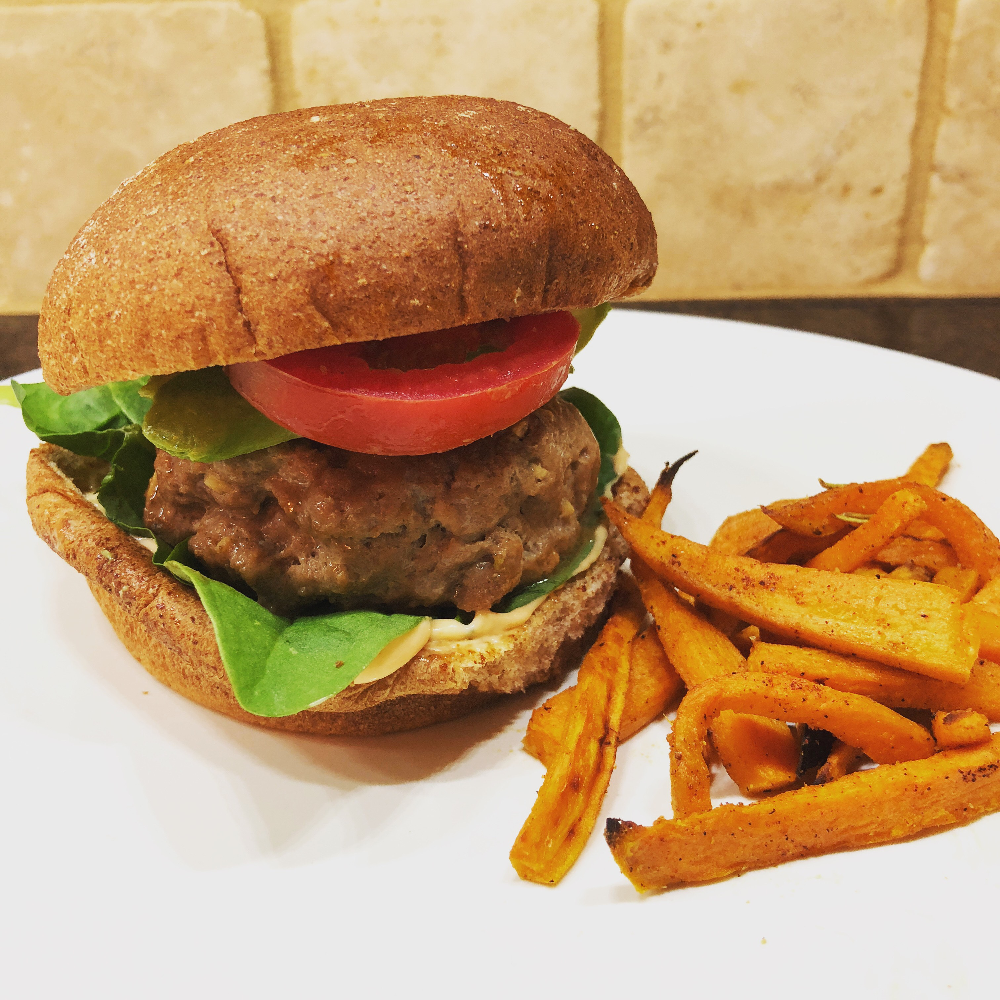

Turkey Burgers

Burgers
Ingredients
Patties
- 1 tablespoon olive oil
- 1 lb. ground turkey
- 3 teaspoons ground ginger
- 3 garlic cloves, minced
- 2 teaspoons soy sauce
- Salt and Pepper to taste
Spicy Mayo
- 1/2 cup of mayonnaise
- 1 lime, juiced
- 1 1/2 teaspoons sriracha
Instructions
In a small bowl, mix the mayonnaise, lime and sriracha. Set aside.
In a large mixing bowl, mix together turkey, ginger, garlic, soy sauce, salt and pepper.
Form into patties - should make about six.
In a large pan, heat the olive oil at medium-high heat. Place patties in pan once heated.
Cook 5-7 minutes each side or until cooked through.
Serve immediately. We like to serve on wheat buns with a dab of the mayo mix, spinach, tomatos and avacado! Enjoy!
Original Source: Best Simple Suppers for Two by Laura Arnold, pg. 58
Sweet Potato Fries
Ingregients
- 2 sweet potatoes
- 1 1/2 tablespoons olive oil
- Salt and pepper to taste
- 1/2 teaspoon paprika
- 1/2 teaspoon garlic powder
- Pinch of dried rosemary
Instructions
Preheat oven to 450˚F.
Slice sweet potatoes into fries. We like ours nice and thin!
In large mixing bowl, combine the sweet potato slices with the olive oil, salt, pepper, paprika, garlic powder and rosemary. Mix until the fries are coated.
On a baking tray lined with parchment paper, spread the fries in a single layer.
Bake for 20–30 minutes (depending on the thickness of the potato slices.) Turn occasionally and keep an eye out so they don’t burn! Serve immediately and enjoy.
Original Source: Mom’s Need To Know